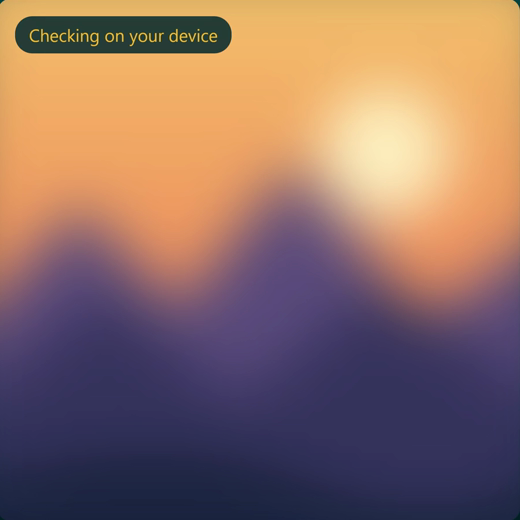
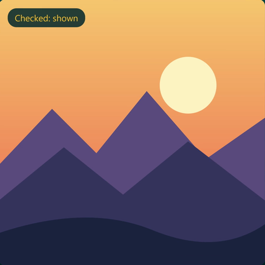
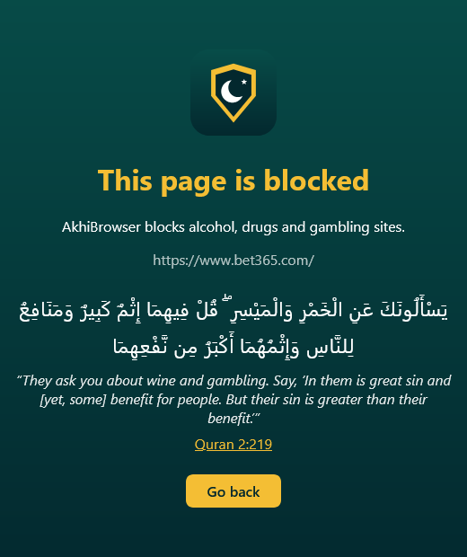
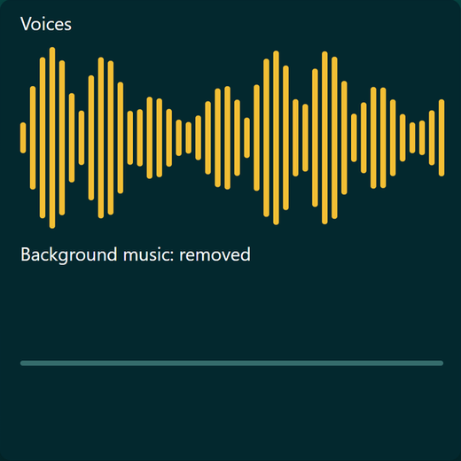
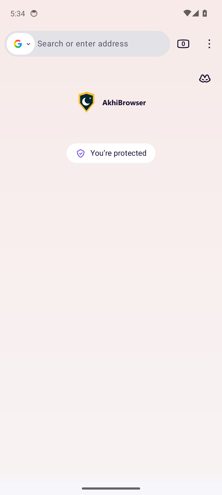

See it work
On from the first page
All of this is free and built in. Each protection can be turned off in the AkhiBrowser shield, and a parental PIN can lock them on.
Ads and trackers blocked
uBlock Origin is installed for you and kept on, with a built-in blocker of ad, tracker and malware domains underneath it.
Adult and haram sites blocked
Adult, alcohol, drugs, vaping and gambling sites. SafeSearch is forced on Google, Bing, DuckDuckGo and Yahoo, and so is YouTube's Restricted Mode.
Searches filtered
Searches for adult or haram content are blocked in 11 languages. Questions about them stay allowed, like "why is alcohol haram".
No music
Removes background music from videos and keeps the voices, using a speech model that runs on your device.
12 languages
English, Arabic, Persian, Kurdish (Sorani), Urdu, Turkish, French, German, Dutch, Spanish, Indonesian and Malay, right to left where needed.
Light on old devices
Only what's on the screen is checked, and images seen before are answered from a cache. Page loads never wait for the model.
Images stay blurred until they're checked
An on-device model looks at images, backgrounds, videos and canvases, so nothing flashes on the screen first. Unsafe ones stay blurred.
You choose who to blur: women (the default), men, or both. A person is blurred by what is seen of them, not the whole image: a woman when her hair or body shows, a man from the navel to the knees.
Filters can miss things, and an image that can't be checked is shown. They don't replace a parent's care.



Blocked before it loads
Adult, alcohol, drugs, vaping and gambling sites stop here, and so do pages that label themselves adult.
Voices stay, music goes
No music cleans a video's audio as you watch, on your device. Phones and slow computers use a Lite model, so old devices can keep up.


On your phone too
The same protections on Android, with no sponsored tiles or stories on the home page. To change them, open the menu, then Extensions, then AkhiBrowser.
Accessibility
For people who are colour blind or hard of hearing, and for anyone who needs a little more help on the web.
Colour blind
Turn on colour-blindness correction in the AkhiBrowser shield. It adjusts the colours of web pages so reds and greens are easier to tell apart, for the two red-green kinds of colour blindness. It's off by default, and doesn't help with blue-yellow colour blindness.
Hard of hearing
No music takes the background music out of videos and keeps the voices, which can make speech easier to follow. It doesn't make captions itself, and captions a site offers keep working as usual.
From Firefox
Firefox's own tools stay in the browser, such as support for screen readers, page zoom and Reader View. We haven't tested these separately in AkhiBrowser.
This page
It works with a keyboard, its pictures have text descriptions, and the moving picture stays still if you've asked your device to reduce motion. The videos have no captions yet, but they show their message as text on screen, and this page says the same.
Something doesn't work for you? Tell us at haukar.hussein@gmail.com.
What leaves your device
Your history, pages and images stay on your device. Nothing goes to us, and no telemetry, studies or crash reports go to Mozilla. A browser still has to talk to a few services, so here they all are.
- Site names, to Cloudflare. To block adult sites at the network level, the browser looks up names through Cloudflare's family DNS, so Cloudflare sees the names of the sites you visit.
- Downloads. uBlock Origin from addons.mozilla.org, ad block lists, and video codecs from Mozilla, Cisco and Google.
- Update check. Once a day, the browser asks GitHub whether a new release is out.
- A Premium key, if you enter one. It's checked with our license server, with a random install id, so a key works on 3 devices at a time. The server keeps no names, emails or browsing data.